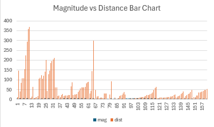
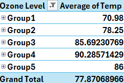
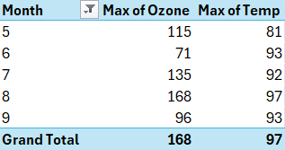

4 Bridget
Welcome to Bridget’s Page.
WEEK ONE
Monday
Week 1 submissisions
4.1 Monday Excel Tutorial
In Monday’s class, we learned how to identify cells, columns, and rows in an Excel worksheet.
Cells are the basic unit of Excel where you enter data. Each cell is identified by a unique address combining the column letter and row number.
Columns are the vertical sets of cells labeled with letters.
Rows are the horizontal sets of cells labeled with numbers.
Some of the essential Excel functions we learned about are the following:
SUM is the function that adds all the numbers in a range of cells.
AVERAGE is the function that calculates the average of numbers in a range.
MAX is the function that finds the maximum value in a range.
MIN is the function that finds the minimum value in a range.
The formula for all previous functions is = before the function and a parenthesis containing the cells. Ex: =SUM(A5:B5)
4.2 Basic Functions
Once the Excel worksheet is created and named correctly, we can start cleaning the data so we do not encounter any errors or make sure our visualizations make sense with the information we care about, taking outliers out or NAs. In this case, I removed all NAs in my data set by selecting the dataset, going to Data in the menu bar, choosing a filter, and checking NAs off.
4.2.1 Scatter Plot
I created a scatter plot by selecting the data, clicking insert in the menu bar, and selecting scatter plot in recommended charts.
4.2.2 Line Plot
I created a line plot by selecting the data, clicking insert in the menu bar, and selecting line plots in recommended charts.
4.2.3 Bar Chart
I created a bar chart by selecting the data, clicking insert in the menu bar, and selecting bar chart in recommended charts.

4.2.4 Pie Chart
I created a pie chart by selecting the data, clicking Insert in the menu bar, and selecting pie charts from the recommended charts.
4.2.5 Histogram
I created a Histogram by selecting the data, clicking insert in the menu bar, and selecting Histogram in recommended charts.
4.2.6 Conclusion
The best charts to visualize this specific data are scatter plots and line plots. With these charts, we can understand the data and observe all the characteristics in an organized way using color. The other graphs are more complex to understand, and it is challenging to recognize repeated numbers and consider them individually, which makes the chart too broad.
Wednesday
4.3 Wednesday Example
In Monday’s class, we learned how to identify cells, columns, and rows in an Excel worksheet. After completing the airquality example, we selected our own datasets. I chose the attenu dataset, which provides information on earthquake attenuation—how the strength of seismic waves decreases as they travel through the Earth. The Joyner–Boore Attenuation Data includes peak acceleration measurements from various observation stations for 23 California earthquakes. This dataset is commonly used to model how ground acceleration (the shaking during an earthquake) decreases with distance from the epicenter and is affected by the earthquake’s magnitude. It’s valuable for studying seismic wave behavior and predicting ground motion intensity at different distances from an earthquake. It uses five variables (Event, Magnitude, Station, Distance, and Acceleration) with 182 observations.
Event is the numeric Event Number.
Mag is the numeric Moment Magnitude.
Station is the factor Station Number.
Distance is the numeric Station-hypocenter distance (km).
Acceleration is the numeric Peak acceleration (g).
4.4 Basic Functions
Once the Excel worksheet is created and named correctly, we can start cleaning the data so we do not encounter any errors or make sure our visualizations make sense with the information we care about, taking outliers out or NAs. In this case, I removed all NAs in my data set by selecting the dataset, going to Data in the menu bar, choosing a filter, and checking NAs off. I also removed all the numbers that made no sense in a numeric column.
4.4.1 Variables to be evaluated
I will evaluate Magnitude and Distance to model how earthquake recordings vary with both the magnitude of the quake and the distance at which it is observed. In other words, how depending on the magnitude people further from the epicenter can still feel it.
4.4.2 Scatter Plot
In this graph, the X-axis shows earthquake magnitude, ranging from about 4 to 8, while the Y-axis represents the distance from the earthquake epicenter in kilometers, going from 0 to 400. For higher magnitudes, the distances are more dispersed, with some data points reaching distances of 350 km or more. A positive relationship between magnitude and distance is suggested, as larger magnitudes correspond to a wider range of distances, indicating that stronger earthquakes may be detected at stations farther from the epicenter.
4.4.3 Line Plot
In this chart, the X-axis is a sequence of data points associated with magnitude and distance values, while the Y-axis shows values for magnitude (in blue) and distance (in orange). We can observe how the distance fluctuates considerably, with peaks reaching up to 350 km, indicating that some earthquakes are recorded at distant stations, though many are detected closer to the epicenter. The magnitude line remains mostly flat along the bottom, suggesting that the magnitude values show little variation compared to the distance. However, we must consider that earthquake magnitudes above 4 can already cause damage. If we made them individual graphs it would reflect better the magnitude. And ultimately determine that higher magnitudes are felt in further locations. In this plot, the earthquakes seem to have relatively consistent magnitudes, likely within a narrow range, while the distance varies more significantly.
4.4.4 Bar Chart
In this chart, the X-axis represents a sequence of data points linked to magnitude and distance values, while the Y-axis displays magnitude (in blue) and distance (in orange). The distance fluctuates significantly, with peaks up to 350 km, indicating that some earthquakes are recorded at distant stations, though many are detected closer to the epicenter. The magnitude line remains mostly flat near the bottom, showing minimal variation in magnitude compared to the distance. However, it’s important to note that magnitudes above 4 can still cause damage. Separate graphs for magnitude and distance would better highlight magnitude trends, showing that stronger earthquakes are often felt at greater distances. Overall, this chart reflects relatively consistent earthquake magnitudes, likely within a narrow range, while distances vary more substantially.
4.4.5 Pie Chart
The pie chart visually displays the distribution of magnitude and distance values within the data set, with magnitude shown in blue and distance in orange. The largest slice represents distance, indicating it is the most frequent or dominant value. However, pie charts are not well-suited for our analysis, as they make it challenging to compare values and are not ideal for illustrating relationships between variables.
4.4.6 Histogram
The histogram above analyzes the distribution of magnitudes across various distance ranges. The X-axis represents these distance ranges, divided into bins, while the Y-axis indicates the frequency of occurrences within each bin. The data reveals a higher frequency of observations in the lower distance ranges, with fewer observations as the distances increase. Most of the observations are concentrated within the first distance range (0.6, 42.6], suggesting that a significant portion of the data is clustered in this region. The presence of a long tail points to potential outliers or extreme values, which may require further investigation.
4.5 Conclusion
The best charts to visualize this specific data are scatter plots.Line plots and bar charts may be better if we consider the variables individually. With these charts, we can understand the data and observe all the characteristics in an organized way using color. The other graphs are more complex to understand, and it is challenging to recognize repeated numbers and consider them individually, which makes the chart too broad.
Saturday
4.5.1 Source
After selecting the dataset from the list provided in class, I entered the link under source, which led me to the epa.gov webpage.
4.5.2 Finding the Dataset
I scrolled down, and in the website’s footer, under connect, I selected the option called Data. EPA data is organized by topic to help users find the necessary information.
The topic I selected is air, which goes over air quality data from stationary and mobile sources to protect public health and public welfare.
(You may also find the data by searching datasets in the lookup section and selecting “Air Data Air Quality Data Collected at Outdoor Monitors Across the US.”)
4.5.3 Downloading the Data
Once you choose the topic, we go to the “Download Data” section and select “Download Daily Data.” Here, you will find a tool that queries daily air quality summary statistics for the criteria pollutants by monitor. You can get data for specific monitors or all monitors in a city, county, or state.
The pollutant I chose was ozone, and the year I selected it was 2023. The geographic area is Florida. The cities to be considered are Miami,Fort Lauderdale, and West Palm Beach. Specifically in the Miami-Dade county. I selected All Sites and clicked “Get Data,” which downloaded an Excel file.
4.5.4 About the Dataset (Summary)
The topic I chose is Airquality focused on air pollutant, specifically ozone. Ozone is a harmful gas formed when pollutants from vehicles, industries, and other sources react with sunlight. We will look into the levels in Florida, Miami,Fort Lauderdale, and West Palm Beach. Specifically in the Miami-Dade county. There are 21 variables in this dataset and 710 observations.
Date refers to the date on which air quality measurements were taken.
Source refers to the origin or provider of the air quality measurements.
Site ID represents a unique identifier for a specific monitoring location or station where the air quality measurements are collected.
POC is the numeric Event Number.
Daily Max 8-hour Ozone Concentration refers to the highest average ozone concentration measured over an 8-hour period within a single day.
Units indicates the measurement units used for the various air quality parameters recorded in the dataset.It is measured in parts per million (ppm).
Daily AQI Value refers to the Air Quality Index (AQI) value calculated for a specific day.The AQI is a numerical scale used to communicate the quality of the air in terms of how it affects health.
Local Site Name refers to the specific name or designation given to the monitoring location or station where the air quality measurements are taken.
Daily Obs Count refers to the number of observations or measurements taken for a specific air quality parameter on a given day.
Percent Complete indicates the proportion of data that is available and valid for a given parameter or time period compared to the total amount of expected data.
AQS Parameter code is a unique identifier used by the Air Quality System (AQS) to categorize and specify different air quality parameters measured in the dataset.
AQS Parameter Description it provides a textual description of the air quality parameter associated with a specific AQS Parameter Code.
Method Code refers to a unique identifier assigned to a specific method or technique used for measuring an air quality parameter.
CBSA Code it stands for Core Based Statistical Area Code. It is a unique identifier used in the United States to designate specific geographic areas defined by the U.S. Office of Management and Budget (OMB) for statistical purposes.
CBSA Name refers to the descriptive name of a Core Based Statistical Area (CBSA).
State FIPS Code i is a numeric code assigned to each U.S. state and federal district by the Federal Information Processing Standards (FIPS).
State refers to the U.S. state or jurisdiction where the air quality measurements were collected.
County FIPS Code it is a numeric code assigned to each county or equivalent jurisdiction within a state by the Federal Information Processing Standards (FIPS).
County refers to the specific county or equivalent administrative region where the air quality measurements were taken.
Site Latitude refers to the geographical latitude coordinate of the monitoring site.
Site Longitude refers to the geographical longitude coordinate of the monitoring site.
4.5.5 Cleaning Data
I went over the Excel document and did not observe any NA values. I did however, encounter some blank cells in the Method Code. All the cells had the number 47 but I chose to delete those that did not have any method listed since I did not want to assume.
I removed all NAs in my data set by selecting the dataset, going to Data in the menu bar, choosing a filter, and checking NAs off.
4.5.6 Variables to evaluate
The variables I will consider are Daily AQI Value and Local Site Name. Our goal is to analyze the air quality by location.
4.5.7 Scatter Plot
4.5.8 Line Plot
4.5.9 Bar Chart
4.5.10 Pie Chart
4.5.11 Histogram
4.6 Conclusion
WEEK TWO
Wednesday
PLACE TEXT HERE
Friday
4.6.1 Dataset
In today’s class we continued to use the airquiality dataset which measures the air quality measurements in New York daily as of May to September 1973. These are only the summer months. The source is the New York State Department of Conservation (ozone data) and the National Weather Service (meteorological data).It has 6 variables (Ozone, Solar, Wind, Temperature, Month, Day) and 153 observations.
4.6.2 Chosen Variables
The two variables I will analyze are Ozone and Temperature. The ozone variable measures the ozone levels in parts per billion from 1300 to 1500 hours at Roosevelt . The temperature is the maximum daily temperature in degrees Fahrenheit at La Guardia Airport. We want to evaluate if higher temperatures affect the ozone levels.
4.7 Scatter Plot
In this scatter plot, we evaluate ozone and temperature. Ozone is on the X-axis, which represents the ozone levels per billion. Temperature is on the Y-axis, and the values are in degrees Fahrenheit. We can observe an upward trend as ozone levels and temperature increase. However, most of the data points are located in clusters between 0 and 80 for ozone and between 60 and 100 for temperature. We find a couple of outliers beyond 120 ppb of ozone, but they are scattered and very few. This suggests that the higher the temperature, the higher the ozone levels are.
4.8 Histogram
The previous histogram evaluates the ozone levels and how frequently different ranges of ozone values appear in the dataset. The X-axis is the ozone ranges divided into bins. The Y-axis shows the count (frequency) at which they occur. The graph shows that most ozone readings fall in the lowest bin (1,25), with almost 50 occurrences. The second largest group is (25,49). We may conclude that lower ozone levels are more common in the dataset (or in New York). Higher ozone levels are rare.
4.9 Pivot Table 1
This pivot table analyzes the average temperature and average ozone levels per day of the month. The temperature values range from approximately 70° to 84°, while ozone levels vary from 12 to 97. The first few days of the month appear to have the highest temperatures. Ozone levels exhibit more significant fluctuations compared to temperature. This suggests that ozone concentrations are more influenced by factors other than simple seasonal patterns.
4.10 Pivot Table 2

Here, we have a pivot table with ozone levels on the row label and average temperature on the column section. We are looking into the average temperature in the different groups of ozone levels. I made the groups by selecting the desired range, right-clicking, and selecting the group. Group 1 has (1,24) ozone level, and Group 2 has (27,50), Group 3 (52,76), Group 4 (77,97), and Group 5 (108,168). We can observe the temperature correlation whenever the ozone levels are from 1 to 25 and so on. The table shows us that the average temperature is higher in the (77,97) range.
4.11 Pivot Table 3

The previous pivot table is looking into the corresponding maximum of ozone levels and temperature given each month we are considering. the months are form May to September which are summer months. We observe that August had the highest ozone levels with 168 levels per billion and also the highest temperatures with 97 degrees Fahrenheit.
4.12 Pivot Table 4

The previous pivot table is looking into the corresponding minimum of ozone levels and temperature given each month we are considering. the months are form May to September which are summer months. We observe that May had the lowest ozone levels with 1 level per billion and also the lowest temperatures with 56 degrees Fahrenheit.
4.13 Pivot Table 5
This pivot table analyzes the relationship between wind speed and temperature to explore potential correlations. Wind speeds range from around 1.7 to 20.7 units, while temperatures vary between 57° and 94°, indicating substantial fluctuation across different wind speeds. A general pattern suggests that temperatures tend to decrease as wind speeds rise. However, exceptions to this trend imply that other factors may also impact temperature.
Saturday
4.14 Midterm Dataset
4.14.1 Source
After selecting the dataset from the list provided in class, I entered the link under source, which led me to the epa.gov webpage.
4.14.2 Finding the Dataset
I scrolled down, and in the website’s footer, under connect, I selected the option called Data. EPA data is organized by topic to help users find the necessary information.
The topic I selected is air, which goes over air quality data from stationary and mobile sources to protect public health and public welfare.
(You may also find the data by searching datasets in the lookup section and selecting “Air Data Air Quality Data Collected at Outdoor Monitors Across the US.”)
4.14.3 Downloading the Data
Once you choose the topic, we go to the “Download Data” section and select “Download Daily Data.” Here, you will find a tool that queries daily air quality summary statistics for the criteria pollutants by monitor. You can get data for specific monitors or all monitors in a city, county, or state.
The pollutant I chose was ozone, and the year I selected it was 2023. The geographic area is Florida. The cities to be considered are Miami,Fort Lauderdale, and West Palm Beach. Specifically in the Miami-Dade county. I selected All Sites and clicked “Get Data,” which downloaded an Excel file.
4.14.4 About the Dataset (Summary)
The topic I chose is Airquality focused on air pollutant, specifically ozone. Ozone is a harmful gas formed when pollutants from vehicles, industries, and other sources react with sunlight. We will look into the levels in Florida, Miami,Fort Lauderdale, and West Palm Beach. Specifically in the Miami-Dade county. There are 21 variables in this dataset and 710 observations.
Date refers to the date on which air quality measurements were taken.
Source refers to the origin or provider of the air quality measurements.
Site ID represents a unique identifier for a specific monitoring location or station where the air quality measurements are collected.
POC is the numeric Event Number.
Daily Max 8-hour Ozone Concentration refers to the highest average ozone concentration measured over an 8-hour period within a single day.
Units indicates the measurement units used for the various air quality parameters recorded in the dataset.It is measured in parts per million (ppm).
Daily AQI Value refers to the Air Quality Index (AQI) value calculated for a specific day.The AQI is a numerical scale used to communicate the quality of the air in terms of how it affects health.
Local Site Name refers to the specific name or designation given to the monitoring location or station where the air quality measurements are taken.
Daily Obs Count refers to the number of observations or measurements taken for a specific air quality parameter on a given day.
Percent Complete indicates the proportion of data that is available and valid for a given parameter or time period compared to the total amount of expected data.
AQS Parameter code is a unique identifier used by the Air Quality System (AQS) to categorize and specify different air quality parameters measured in the dataset.
AQS Parameter Description it provides a textual description of the air quality parameter associated with a specific AQS Parameter Code.
Method Code refers to a unique identifier assigned to a specific method or technique used for measuring an air quality parameter.
CBSA Code it stands for Core Based Statistical Area Code. It is a unique identifier used in the United States to designate specific geographic areas defined by the U.S. Office of Management and Budget (OMB) for statistical purposes.
CBSA Name refers to the descriptive name of a Core Based Statistical Area (CBSA).
State FIPS Code i is a numeric code assigned to each U.S. state and federal district by the Federal Information Processing Standards (FIPS).
State refers to the U.S. state or jurisdiction where the air quality measurements were collected.
County FIPS Code it is a numeric code assigned to each county or equivalent jurisdiction within a state by the Federal Information Processing Standards (FIPS).
County refers to the specific county or equivalent administrative region where the air quality measurements were taken.
Site Latitude refers to the geographical latitude coordinate of the monitoring site.
Site Longitude refers to the geographical longitude coordinate of the monitoring site.
4.14.5 Cleaning Data
I went over the Excel document and did not observe any NA values. I did however, encounter some blank cells in the Method Code. All the cells had the number 47 but I chose to delete those that did not have any method listed since I did not want to assume.
I removed all NAs in my data set by selecting the dataset, going to Data in the menu bar, choosing a filter, and checking NAs off.
4.14.6 Variables to evaluate
The variables I will consider are Daily AQI Value and Local Site Name. Our goal is to analyze the air quality by location.
4.14.7 Scatter Plot
4.14.8 Line Plot
4.14.9 Bar Chart
4.14.10 Pie Chart
4.14.11 Histogram
4.15 Conclusion
WEEK THREE
Wednesday
4.16 Attenu
The dataset that I will be using is Attenu (Attenuation). It provides information on earthquake attenuation—how the strength of seismic waves decreases as they travel through the Earth. The Joyner–Boore Attenuation Data includes peak acceleration measurements from various observation stations for 23 California earthquakes. This dataset is commonly used to model how ground acceleration (the shaking during an earthquake) decreases with distance from the epicenter and is affected by the earthquake’s magnitude. It’s valuable for studying seismic wave behavior and predicting ground motion intensity at different distances from an earthquake. It uses five variables (Event, Magnitude, Station, Distance, and Acceleration) with 182 observations.
4.17 Tableau
I went to the Tableau public access website and created an account to access Tableau. On the top left, I went to create and select web authoring. There, I uploaded my file (dataset).
An advantage to this dataset is that I can understand all its data. Using Tableau, I could graph the significance and correlation of variables like magnitude and acceleration in each location and use colors to better tell that story.
4.18 Dashboard
To create a dashboard in Tableau, I followed these steps:
Build and Customize the Graphs: I began by creating an initial graph. I duplicated it once it met my requirements to save time and modified the variables or graph type to suit my analysis. To enhance customization, I used Tableau’s options to drag variables into elements such as size, color, or shape. If I was unsure which graph type to use, Tableau’s “Show Me” feature offered a range of suggestions for visualizing the data effectively.I used filters and parameters in cases where the graphs were too long.
Set Columns and Rows: When building the graphs, I placed string (categorical) values in the columns and numerical values in the rows. This arrangement helped structure the data to tell a clear and coherent story. I always double-checked that the information was logically presented and visually meaningful.
Repeat for Multiple Graphs: I repeated the process, creating at least four visualizations to gain a well-rounded data perspective. This ensured that my dashboard displayed diverse insights.
Create the Dashboard: Once all my visualizations were ready, I clicked the dashboard button next to the sheet number to start building the dashboard. I customized its size by adjusting the height and width to match the desired layout.
Organize the Sheets: I dragged each graph sheet into the dashboard workspace, carefully arranging and organizing them into a clear, easy-to-navigate structure. I made sure the layout was logical and visually appealing.
Publish and Share: I published the dashboard once I was satisfied with the final design. After publishing it, I clicked the “Share” button and copied the link to distribute or present the dashboard to others.
The types of charts I used are bubble chart, bar chart, scatter plot, and line graph.
4.19 Link
Friday
PLACE TEXT HERE
Saturday
Midterm Dashboard
4.20 Dataset
This dataset is about Airquality focused on air pollutants, specifically ozone. Ozone is a harmful gas formed when pollutants from vehicles, industries, and other sources react with sunlight. We will look into the levels in Florida, Miami,Fort Lauderdale, and West Palm Beach. Specifically in the Miami-Dade county. The source is the EDA website and the year we are focusing in is 2023. There are 21 variables in this dataset and 710 observations. The variables are Date, Source, Site ID, POC, Daily Max 8-hour Ozone Concentration, Units, Daily AQI Value, Local Site Name, Daily Obs Count, Percent Complete, AQS Parameter code, AQS Parameter Description, Method Code, CBSA Code, CBSA Name, State FIPS Code, State, County FIPS Code, County, Site Latitude, and Site Longitude.
4.21 Tableau
I went to Tableau’s public access website and created an account to access Tableau. On the top left, I went to create and select web authoring. There, I uploaded my file (dataset).
Tableau recognized that my data set had locations, so I could play around with maps and geographic locations, which was really fun.
It was a little hard to continue using the variables that I had previously used in the past weeks, so I had to opt for others, which still told me valuable information about the dataset. The option “show me more” was also very useful in making the graphs.
4.22 Dashboard
To create a dashboard in Tableau, I followed these steps:
Build and customize the graphs: I started by creating a graph. Once I was satisfied with the first one, I duplicated it, modified the variables, and adjusted the graph type to suit my needs. I dragged the variables into elements like size, color, or shape for further customization. When unsure about the best graph type to use, Tableau provides suggestions through the “Show Me” feature, which offers additional visualization options. I used filters and parameters in cases where the graphs were too long.
Use columns and rows: When setting up the graph, I tried placing string (categorical) values in the columns and numerical values in the rows. This layout often helps to ensure the visualization tells a coherent story. I then check if the data makes sense, both visually and contextually.
Repeat for multiple graphs: After completing one graph, I repeated the process to create at least four different visualizations. This provided a diverse set of insights for the dashboard.
Create the dashboard: Once all my graphs were ready, I clicked the dashboard button located next to the sheet number. In this view, you can adjust the height and width of your dashboard to your desired dimensions.
Drag and Organize Sheets: I dragged the sheets with graphs into the dashboard workspace. Then, I arrange and organize them to create a clean, logical layout.
Publish and Share: I published the dashboard when I was happy with the final design. After publishing, I clicked the “Share” button and copied the provided link to distribute my work.
The types of charts I used are map, scatter plot, bar chart, and area chart.
4.23 Link
WEEK FOUR
Wednesday
INSERT TEXT HERE
Friday
4.24 Jupyter Lab Work
We learnt Visualization using Python today. For more details please refer to my Jupyter note by clicking the below link.
Saturday
INSERT TEXT HERE